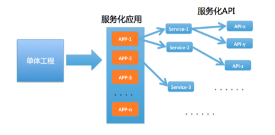
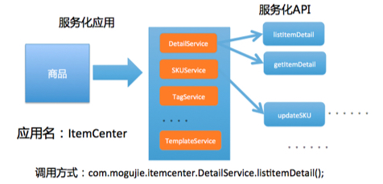
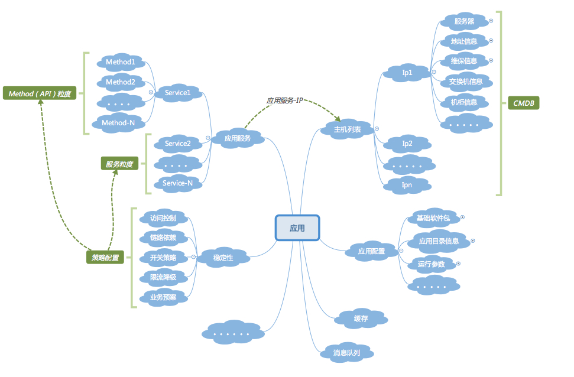
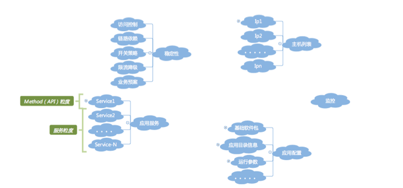

- 00 开篇词 带给你不一样的运维思考.md
- 01 为什么Netflix没有运维岗位？.md
- 02 微服务架构时代，运维体系建设为什么要以应用为核心？.md
- 03 标准化体系建设（上）：如何建立应用标准化体系和模型？.md
- 04 标准化体系建设（下）：如何建立基础架构标准化及服务化体系？.md
- 05 如何从生命周期的视角看待应用运维体系建设？.md
- 06 聊聊CMDB的前世今生.md
- 07 有了CMDB，为什么还需要应用配置管理？.md
- 08 如何在CMDB中落地应用的概念？.md
- 09 如何打造运维组织架构？.md
- 10 谷歌SRE运维模式解读.md
- 11 从谷歌CRE谈起，运维如何培养服务意识？.md
- 12 持续交付知易行难，想做成这事你要理解这几个关键点.md
- 13 持续交付的第一关键点：配置管理.md
- 14 如何做好持续交付中的多环境配置管理？.md
- 15 开发和测试争抢环境？是时候进行多环境建设了.md
- 16 线上环境建设，要扛得住真刀真枪的考验.md
- 17 人多力量大vs.两个披萨原则，聊聊持续交付中的流水线模式.md
- 18 持续交付流水线软件构建难吗？有哪些关键问题？.md
- 19 持续交付中流水线构建完成后就大功告成了吗？别忘了质量保障.md
- 20 做持续交付概念重要还是场景重要？看笨办法如何找到最佳方案.md
- 21 极端业务场景下，我们应该如何做好稳定性保障？.md
- 22 稳定性实践：容量规划之业务场景分析.md
- 23 稳定性实践：容量规划之压测系统建设.md
- 24 稳定性实践：限流降级.md
- 25 稳定性实践：开关和预案.md
- 26 稳定性实践：全链路跟踪系统，技术运营能力的体现.md
- 27 故障管理：谈谈我对故障的理解.md
- 28 故障管理：故障定级和定责.md
- 29 故障管理：鼓励做事，而不是处罚错误.md
- 30 故障管理：故障应急和故障复盘.md
- 31 唇亡齿寒，运维与安全.md
- 32 为什么蘑菇街会选择上云？是被动选择还是主动出击？.md
- 33 为什么混合云是未来云计算的主流形态？.md
- 35 以绝对优势立足：从CDN和云存储来聊聊云生态的崛起.md
- 36 量体裁衣方得最优解：聊聊页面静态化架构和二级CDN建设.md
- 37 云计算时代，我们所说的弹性伸缩，弹的到底是什么？.md
- 38 我是如何走上运维岗位的？.md
- 39 云计算和AI时代，运维应该如何做好转型？.md
- 40 运维需要懂产品和运营吗？.md
- 41 冷静下来想想，员工离职这事真能防得住吗？.md
- 42 树立个人品牌意识：从背景调查谈谈职业口碑的重要性.md
- 划重点：赵成的运维体系管理课精华（一）.md
- 划重点：赵成的运维体系管理课精华（三）.md
- 划重点：赵成的运维体系管理课精华（二）.md
- 新书 《进化：运维技术变革与实践探索》.md
- 特别放送 我的2019：收获，静静等待.md
- 结束语 学习的过程，多些耐心和脚踏实地.md
02 微服务架构时代，运维体系建设为什么要以应用为核心？
今天我来讲一下微服务架构模式下的一个核心概念：应用。
我会从这几个方面来讲：应用的起源、应用模型和应用关系模型建模以及为什么要这样做。最终希望，在微服务的架构模式下，我们的运维视角一定转到应用这个核心概念上来，一切要从应用的角度来分析和看待问题。
应用的起源
我们知道，微服务架构一般都是从单体架构或分层架构演进过来的。软件架构服务化的过程，就是我们根据业务模型进行细化的过程，在这个过程中切分出一个个具备不同职责的业务逻辑模块，然后每个微服务模块都会提供相对应业务逻辑的服务化接口。
如果解释得简单点，就一个字，拆！如下图，从一个单体工程，拆分出N个独立模块。

这些模块可以独立部署和运行，并提供对应的业务能力。拆分后的模块数量与业务体量和复杂度相关，少则几个、十几个，多则几十、几百个，所以为了统一概念，我们通常称这些模块为应用。
为了确保每个应用的唯一性，我们给每个应用定义一个唯一的标识符，如上图的APP-1、APP-2等，这个唯一标识符我们称之为应用名。
接下来，这个定义为应用的概念，将成为我们后续一系列微服务架构管理的核心概念。
应用模型及关系模型的建立
上面我们定义出来的一个个应用，都是从业务角度入手进行拆分细化出来的业务逻辑单元。它虽然可以独立部署和运行，但是每一个应用都只具备相对单一的业务职能。如果要完成整体的业务流程和目标，就需要和周边其它的服务化应用交互。同时，这个过程中还需要依赖各种与业务无直接关系、相对独立的基础设施和组件，比如机器资源、域名、DB、缓存、消息队列等等。
所以，除了应用这个实体之外，还会存在其他各类基础组件实体。同时，在应用运行过程中，还需要不断地与它们产生和建立各种各样复杂的关联关系，这也为我们后续的运维带来很多困难。
那接下来，我们要做的就是应用模型以及各种关系模型的梳理和建立，因为只有模型和关系梳理清楚了，才能为我们后面一系列的运维自动化、持续交付以及稳定性保障打下一个良好的基础。
1.应用业务模型
应用业务模型，也就是每个应用对外提供的业务服务能力，并以API的方式暴露给外部，如下图商品的应用业务模型示例：

这个业务模型通常都是业务架构师在进行业务需求分析和拆解时进行设计，更多的是聚焦在业务逻辑上，所以从运维的角度，我们一般不会关注太多。
而接下来的几部分，将是运维要重点关注的内容。
2.应用管理模型
应用管理模型，也就是应用自身的各种属性，如应用名、应用功能信息、责任人、Git地址、部署结构（代码路径、日志路径以及各类配置文件路径等）、启停方式、健康检测方式等等。这其中，应用名是应用的唯一标识，我们用AppName来表示。
这里我们可以把应用想象成一个人，通常一个人会具备身份证号码、姓名、性别、家庭住址、联系方式等等属性，这里身份证号码，就是一个人的唯一标识。
3.应用运行时所依赖的基础设施和组件
- 资源层面：应用运行所必需的资源载体有物理机、虚拟机或容器等，如果对外提供HTTP服务，就需要虚IP和DNS域名服务；
- 基础组件：这一部分其实就是我们所说的中间件体系，比如应用运行过程中必然要存储和访问数据，这就需要有数据库和数据库中间件；想要更快地访问数据，同时减轻DB的访问压力，就需要缓存；应用之间如果需要数据交互或同步，就需要消息队列；如果进行文件存储和访问，就需要存储系统等等。
从这里我们可以挖掘出一条规律，那就是这些基础设施和组件都是为上层的一个个业务应用所服务的。也正是因为业务和应用上的需求，才开启了它们各自的生命周期。如果脱离了这些业务应用，它们自己并没有单纯存在的意义。所以，从始至终基础设施和组件都跟应用这个概念保持着紧密的联系。
理清了这个思路，我们再去梳理它们之间的关系就会顺畅很多，分为两步。
第一步，建立各个基础设施和组件的数据模型，同时识别出它们的唯一标识。这个套路跟应用管理模型的梳理类似，以典型的缓存为例，每当我们申请一个缓存空间时，通常会以NameSpace来标识唯一命名，同时这个缓存空间会有空间容量和Partition分区等信息。
第二步，也是最关键的一步，就是识别出基础设施及组件可以与应用名AppName建立关联关系的属性，或者在基础组件的数据模型中增加所属应用这样的字段。
还是以上面的缓存为例，既然是应用申请的缓存空间，并且是一对一的关联关系，既可以直接将NameSpace字段取值设置为AppName，也可以再增加一个所属应用这样的字段，通过外键关联模式建立起应用与缓存空间的关联关系。
相应地，对于消息队列、DB、存储空间等，都可以参考上面这个思路去做。
通过上面的梳理，我们就可以建立出类似下图这样的以应用为核心的应用模型和关联关系模型了，基于这个统一的应用概念，系统中原本分散杂乱的信息，最终都被串联了起来，应用也将成为整个运维信息管理及流转的纽带。

真实的情况是怎么样的？
上面讲了这么多理论和道理，但是我们业界真实的现状是怎样的呢？
从我个人实际观察和经历的场景来看，大部分公司在这块的统筹规划是不够的，或者说是不成熟的。也就是软件架构上引入了微服务，但是后续的一系列运维措施和管理手段没跟上，主要还是思路没有转变过来。虽然说要做DevOps，但实际的执行还是把开发和运维分裂了去对待，不信你看下面两个常见的场景。
- 场景一
这个场景是关于线上的缓存和消息队列的。
开发使用的时候就去申请一下，一开始还能记住自己使用了哪些，但是时间一长，或者申请得多了，就记不住了。久而久之，线上就存在一堆无用的NameSpace和Topic，但是集群的维护者又不敢随意清理，因为早就搞不清楚是谁用的，甚至申请人已经离职，以后会不会再用也已经没人讲得清楚了，越往后就越难维护。
根本原因，就是前面我们讲到的，太片面地对待基础组件，没有与应用的访问建立起关联关系，没有任何的生命周期管理措施。
- 场景二
这个典型场景就体现了应用名不统一的问题。
按照我们前面讲的，按说应用名应该在架构拆分出一个个独立应用的时候就明确下来，并贯穿整个应用生命周期才对。
但是大多数情况下，我们的业务架构师或开发在早期只考虑应用开发，并不会过多地考虑整个应用的生命周期问题，会下意识地默认后面的事情是运维负责的，所以开发期间，只要将应用开发完和将服务注册到服务配置中心上就OK了。
而到了运维这里，也只从软件维护的角度，为了便于资源和应用配置的管理，会独立定义一套应用名体系出来，方便自己的管理。
这时不统一的问题就出现了，如果持续交付和监控系统这些运维平台也是独立去开发的，脱节问题就会更严重。
如下图所示，一个个的孤岛，无法成为体系，当这些系统需要对接时，就会发现需要做大量的应用名转化适配工作，带来非常多无谓的工作量，所谓的效率提升就是一句空话。

所以，今天一开头我就提到，微服务架构模式下的运维思路一定要转变，一定要将视角转换到应用这个维度，从一开始就要统一规划，从一开始就要将架构、开发和运维的工作拉通了去看，这一点是与传统运维的思路完全不同的。
当然，这里面也有一个经验的问题。虽然微服务在国内被大量应用，但是我们绝大多数技术团队的经验还集中在开发设计层面。微服务架构下的运维经验，确实还需要一个总结积累的过程。我自己也是痛苦地经历了上面这些反模式，才总结积累下这些经验教训。
这也是为什么我今天分享了这样一个思路，我们要转换视角，规划以应用为核心的运维管理体系。
不知道你目前是否也遇到了类似的问题，如果今天的内容对你有帮助，也请你分享给身边的朋友。
欢迎你留言与我一起讨论。
© 2019 - 2023 Liangliang Lee. Powered by Vert.x and hexo-theme-book.